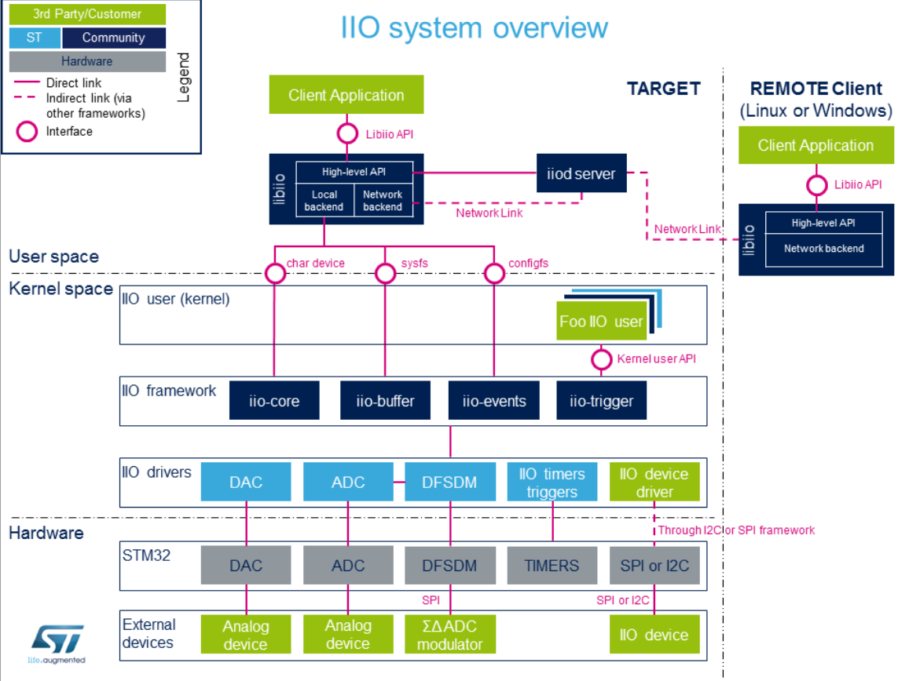
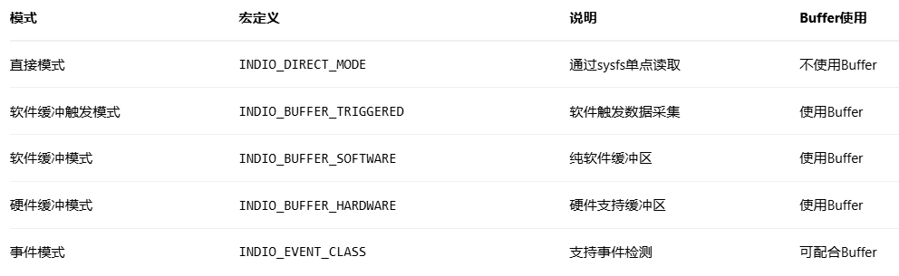

IIO子系统
IIO（Industrial I/O）子系统是Linux中对于类ADC传感器（温湿度、电压、电流、IMU…）数据采集所提供的一个框架
总览
在Linux内核中，IIO同样遵循着“驱动”分层的理念，一个完整的IIO设备的驱动可以分为以下几层

典型的数据流向：
1
2
3
4
5
| 1.配置：用户通过sysfs配置传感器参数
2.触发：配置触发器（定时或外部事件）
3.采集：触发器启动数据采集
4.缓冲：数据存入IIO缓冲区
5.读取：用户空间从字符设备读取数据
|
参考链接：
核心概念
相关数据结构的拓扑关系
1
2
3
4
5
6
7
8
9
10
11
12
13
14
15
16
17
18
19
| iio_dev (设备实例)
|
|-- iio_info (回调函数)
| |-- read_raw()
| |-- write_raw()
| |-- update_scan_mode()
| `-- ...
|
|-- iio_chan_spec[] (通道数组)
| |-- type, channel, scan_index
| |-- info_mask_* (属性掩码)
| |-- scan_type (数据格式)
| `-- event_spec (事件规格)
|
|-- iio_buffer_setup_ops (缓冲区操作)
| |-- preenable(), postenable()
| `-- predisable(), postdisable()
|
`-- active_scan_mask (活动通道掩码)
|
iio_dev
iio_dev代表一个IIO设备实例
1
2
3
4
5
6
7
8
9
10
11
12
13
14
15
16
17
18
19
20
21
22
23
24
|
struct iio_dev {
int modes;
int currentmode;
struct device dev;
int id;
const char *name;
const struct iio_info *info;
const struct iio_buffer_setup_ops *setup_ops;
struct iio_channel *channels;
int num_channels;
struct list_head buffer_list;
int scan_bytes;
const unsigned long *available_scan_masks;
const unsigned int *active_scan_mask;
bool scan_timestamp;
struct attribute_group *attrs;
struct attribute_group *event_interface_attrs;
};
|
1
2
3
4
5
| #define INDIO_DIRECT_MODE 0x01
#define INDIO_BUFFER_TRIGGERED 0x02
#define INDIO_BUFFER_SOFTWARE 0x04
#define INDIO_BUFFER_HARDWARE 0x08
#define INDIO_EVENT_CLASS 0x10
|

- 只有设置了
INDIO_BUFFER_*模式的设备才能使用Buffer
- 直接模式（
INDIO_DIRECT_MODE）是互斥的，不能与Buffer模式共存
不使用Buffer：
使用Buffer：
1
| 用户启用Buffer → 用户触发/定时/硬件自动触发 → 驱动批量读硬件 → 数据入Buffer → 用户读取Buffer
|
iio_info
直接读取模式下，用户空间和驱动的交互流程：
1
| 用户空间操作sysfs节点 → 内核调用属性show/store → 调用iio_info回调 → 驱动处理 → 返回结果
|
调用链：
1
2
3
4
5
6
7
8
9
10
11
12
13
| 用户：cat /sys/.../in_voltage0_raw
↓
IIO核心：iio_chan_sysfs_show()
↓
解析出：通道=0, 属性类型=IIO_CHAN_INFO_RAW
↓
调用：indio_dev->info->read_raw()
↓
驱动：adc_read_raw()
↓
驱动读取硬件寄存器
↓
返回数据 → 格式化 → 用户空间
|
1
2
3
4
5
6
7
8
9
10
11
12
13
14
15
16
17
18
19
20
21
22
23
24
25
26
27
28
29
30
31
32
33
34
35
36
37
38
39
40
41
42
43
44
45
46
47
|
struct iio_info {
struct module *driver_module;
const struct attribute_group *attrs;
int (*read_raw)(struct iio_dev *indio_dev,
struct iio_chan_spec const *chan,
int *val, int *val2, long mask);
int (*write_raw)(struct iio_dev *indio_dev,
struct iio_chan_spec const *chan,
int val, int val2, long mask);
int (*read_avail)(struct iio_dev *indio_dev,
struct iio_chan_spec const *chan,
const int **vals, int *type, int *length,
long mask);
int (*write_raw_get_fmt)(struct iio_dev *indio_dev,
struct iio_chan_spec const *chan,
long mask);
int (*read_event_value)(struct iio_dev *indio_dev,
u64 event_code, int *val);
int (*write_event_value)(struct iio_dev *indio_dev,
u64 event_code, int val);
int (*validate_trigger)(struct iio_dev *indio_dev,
struct iio_trigger *trig);
int (*update_scan_mode)(struct iio_dev *indio_dev,
const unsigned long *scan_mask);
int (*debugfs_reg_access)(struct iio_dev *indio_dev,
unsigned reg, unsigned writeval,
unsigned *readval);
};
|
通道
定义
IIO通道是IIO框架中表示单个传感器数据流的抽象。每个通道对应一个物理量（如温度、电压、加速度等）的测量点。一个传感器设备可以有多个通道（如三轴加速度计有X、Y、Z三个通道）
作用
- 定义数据类型：指定测量的是什么物理量（电压、温度、加速度等）
- 描述数据格式：指定数据如何编码（位数、符号、字节序等）
- 配置属性：控制哪些sysfs属性对该通道可用
- 组织数据流：定义在Buffer中的数据排列顺序
核心数据结构
iio_chan_spec定义设备的每个数据通道，核心层会根据iio_chan_spec字段自动在sysfs下创建属性文件，并绑定show和store方法
1
2
3
4
5
6
7
8
9
10
11
12
13
14
15
16
17
18
19
20
21
22
23
24
25
26
27
28
29
|
struct iio_chan_spec {
enum iio_chan_type type;
int channel;
int channel2;
unsigned long address;
int scan_index;
struct {
char sign;
u8 realbits;
u8 storagebits;
u8 shift;
u8 repeat;
enum iio_endian endianness;
} scan_type;
long info_mask_separate;
long info_mask_shared_by_type;
long info_mask_shared_by_dir;
long info_mask_shared_by_all;
const struct iio_event_spec *event_spec;
unsigned int num_event_specs;
const struct iio_chan_spec_ext_info *ext_info;
const char *extend_name;
const char *datasheet_name;
unsigned modified:1;
unsigned indexed:1;
unsigned output:1;
unsigned differential:1;
};
|
关键字段：
type：最重要的字段，定义通道类型，决定了sysfs属性路径（如in_voltage0_raw）
1
2
3
4
5
6
7
8
9
10
11
12
13
14
15
16
17
| enum iio_chan_type {
IIO_VOLTAGE,
IIO_CURRENT,
IIO_POWER,
IIO_ACCEL,
IIO_ANGL_VEL,
IIO_MAGN,
IIO_LIGHT,
IIO_INTENSITY,
IIO_PROXIMITY,
IIO_TEMP,
IIO_INCLI,
IIO_ROT,
IIO_ANGL,
IIO_TIMESTAMP,
};
|
IIO设备在sysfs下有哪些属性由下面这几个字段控制：
一个物理量通常由多个属性，比如一个X轴加速度有RAW和SCALE2个属性，分离它们让用户既可以直接用物理量，也能获取原始数据做高级处理
info_mask_separate：每个通道独立的属性
- 如
raw、offset、scale等
- 路径：
in_voltage0_raw、in_voltage1_raw
info_mask_shared_by_type：同类型通道共享的属性
- 如所有电压通道共享的
scale
- 路径：
in_voltage_scale
info_mask_shared_by_dir：同方向通道共享的属性
info_mask_shared_by_all：所有通道共享的属性
Buffer子系统
定义
Buffer是IIO的数据暂存区，批量存储多个通道、多个样本的数据。使用Buffer可以实现：多个数据存到缓冲区后一次性给用户空间，减少系统调用次数
IIO Buffer不会自己填充，必须由Trigger触发IIO数据读取后，才会被填充。它本质是内核中的一个环形队列，数据在 Buffer 中是按“扫描顺序（Scan Order）”排列的。比如使能了通道 0、2 和时间戳，Buffer 中的一帧数据结构可能是：[Ch0][Ch2][Padding][Timestamp]，内核通过 kfifo 机制处理并发读写，确保采集不丢包
IIO Scan Mask (扫描掩码)决定了哪些通道的数据会被放入 Buffer，假如我们需要 5 个通道，通过 Sysfs 接口（scan_elements/ in_voltageX_en），用户可以动态选择需要开启的通道，驱动程序根据 active_scan_mask 来决定读取哪些寄存器
核心数据结构
1
2
3
4
5
6
7
8
9
10
11
|
struct iio_buffer_setup_ops {
int (*preenable)(struct iio_dev *);
int (*postenable)(struct iio_dev *);
int (*predisable)(struct iio_dev *);
int (*postdisable)(struct iio_dev *);
bool (*validate_scan_mask)(struct iio_dev *indio_dev,
const unsigned long *scan_mask);
};
|
Trigger子系统
定义
Trigger是IIO框架中的数据采集触发器。IIO设备不会”自动”读取数据，必须被Trigger驱动。它决定”何时“读取数据，而不是”如何”读取
Trigger可以基于：
定时器（固定频率）
外部信号（GPIO中断）
软件命令
其他传感器的事件
注意：
- Trigger是独立设备：有自己的设备节点，不依赖具体传感器
- 多对多关系：一个Trigger可触发多个设备，一个设备可用多个Trigger
- current_trigger是符号链接：指向实际Trigger设备
- 必须Buffer模式：只有支持Buffer的IIO设备才有
trigger/目录
作用
同步采集：多个传感器同时采样
事件驱动：只在需要时采集，节省功耗
精确时序：保证采样时间的准确性
数据关联：多传感器数据时间对齐
类型
trigger的类型确定于iio_dev的mode字段
硬件触发
工作原理：
外部引脚产生中断
中断服务程序调用Trigger
Trigger通知所有注册的设备
各设备同时读取数据
软件触发
1
| echo 1 > /sys/bus/iio/devices/trigger0/trigger_now
|
工作原理：
- 用户写入trigger_now文件
- 内核调用trigger回调
- 设备执行数据采集
定时器触发器
1
2
|
echo 100 > /sys/bus/iio/devices/trigger0/sampling_frequency
|
工作原理：
核心数据结构
1
2
3
4
5
6
7
8
9
10
11
12
13
14
15
16
17
|
struct iio_trigger {
const struct iio_trigger_ops *ops;
struct module *owner;
int id;
const char *name;
struct device dev;
struct list_head list;
struct list_head alloc_list;
};
struct iio_trigger_ops {
int (*set_trigger_state)(struct iio_trigger *trig, bool state);
int (*reenable)(struct iio_trigger *trig);
int (*validate_device)(struct iio_trigger *trig,
struct iio_dev *indio_dev);
};
|
使用示例：
1
2
3
4
5
6
7
8
9
10
11
12
|
struct iio_trigger *trigger;
trigger = iio_trigger_alloc(dev, "my_trigger_%s", name);
trigger->ops = &trigger_ops;
iio_trigger_register(trigger);
iio_trigger_set_drvdata(trigger, data);
|
sysfs节点详解
一个IIO设备在sysfs下有以下主要节点
1
2
3
4
5
6
7
8
9
10
11
12
13
14
15
16
17
18
19
20
21
22
23
24
25
26
27
28
29
30
31
32
| /sys/bus/iio/devices/iio:deviceX/
├── name # 设备名称 → iio_dev->name
├── dev # 设备号
├── of_node -> ../../../../../../../firmware/devicetree/base/...
├── power/ # 电源管理
├── subsystem -> ../../../../../../../bus/iio
├── uevent
├── in_accel_x_raw # 单次读取属通道属性（直接I/O）
├── in_accel_y_raw
├── in_accel_z_raw
├── in_accel_scale
├── sampling_frequency # 共享属性
├── buffer/ # Buffer控制
│ ├── enable
│ ├── length
│ └── watermark
├── scan_elements/ # 缓冲扫描配置目录
│ ├── in_accel_x_en # 使能X轴（0/1）
│ ├── in_accel_x_index # 在缓冲中的位置
│ └── in_accel_x_type # 数据类型（le:s16）
├── trigger/ # Trigger配置
│ └── current_trigger # 当前绑定的Trigger
└── events/ # 事件配置（如有）
├── in_accel_thresh_either_en
└── in_accel_thresh_either_value
/sys/bus/iio/devices/triggerX/
├── name # Trigger名称
├── trigger_now # 立即触发（软件Trigger）
├── sampling_frequency # 采样频率（定时Trigger）
├── sampling_frequency_available # 可用频率
└── subsystem -> ../../bus/iio
|
通道相关节点
1
2
3
4
5
6
7
8
| struct iio_chan_spec channel = {
.type = IIO_ACCEL,
.modified = 1,
.channel2 = IIO_MOD_X,
.info_mask_separate = BIT(IIO_CHAN_INFO_RAW) |
BIT(IIO_CHAN_INFO_CALIBSCALE),
.info_mask_shared_by_type = BIT(IIO_CHAN_INFO_SAMP_FREQ),
};
|
- in_accel_x_raw：
.info_mask_separate中的IIO_CHAN_INFO_RAW
- in_accel_x_calibscale：
.info_mask_separate中的IIO_CHAN_INFO_CALIBSCALE
- in_accel_sampling_frequency：
.info_mask_shared_by_type中的IIO_CHAN_INFO_SAMP_FREQ
Buffer相关节点
来自iio_dev的.iio_buffer_setup_ops和iio_chan_spec的.scan_type
buffer/
scan_elements/
- _en：控制”采不采”这个通道（仅Buffer模式下有效）
- _ index：告诉用户 这个通道数据在Buffer的哪里
- _type：告诉用户 这个数据怎么解析
Trigger相关节点
来自struct iio_trigger
- trigger/目录 → 当iio_dev支持Buffer模式时自动创建
- current_trigger→ 指向当前绑定的Trigger
不同的Tigger对应的节点不同：
1
2
3
4
5
6
7
8
9
10
11
12
13
14
15
| # 软件Trigger
/sys/bus/iio/devices/trigger0/
├── name = "sysfstrig0"
└── trigger_now # echo 1 > trigger_now
# 定时Trigger
/sys/bus/iio/devices/trigger0/
├── name = "hrtimer0"
├── sampling_frequency # 设置频率
└── sampling_frequency_available
# GPIO Trigger
/sys/bus/iio/devices/trigger0/
├── name = "gpio-trigger-17" # 基于GPIO 17
└── ... # 无用户可配置参数
|
命名规则
- 输入通道：
in_
- 输出通道：
out_
- 类型：
voltage、accel、temp等
- 修饰符：
x、y、z、illuminance等
- 后缀：
_raw、_scale、_offset等
驱动模板
1
2
3
4
5
6
7
8
9
10
11
12
13
14
15
16
17
18
19
20
21
22
23
24
25
26
27
28
29
30
31
32
33
34
35
36
|
struct iio_dev *indio_dev;
indio_dev = devm_iio_device_alloc(&client->dev, sizeof(*data));
if (!indio_dev)
return -ENOMEM;
indio_dev->name = "adc_example";
indio_dev->info = &adc_info;
indio_dev->modes = INDIO_DIRECT_MODE;
static const struct iio_chan_spec adc_channels[] = {
{
.type = IIO_VOLTAGE,
.indexed = 1,
.channel = 0,
.info_mask_separate = BIT(IIO_CHAN_INFO_RAW) |
BIT(IIO_CHAN_INFO_SCALE),
.scan_index = 0,
.scan_type = {
.sign = 'u',
.realbits = 12,
.storagebits = 16,
.shift = 4,
},
},
IIO_CHAN_SOFT_TIMESTAMP(1),
};
indio_dev->channels = adc_channels;
indio_dev->num_channels = ARRAY_SIZE(adc_channels);
ret = devm_iio_device_register(&client->dev, indio_dev);
|
libiio
libiio是一个开源的iio用户态组件，包括一些调试用的命令行工具和库，用来简化应用层对iio设备的开发和调试
调试
1.为什么有的驱动明明有buffer、trigger文件，可是它的probe函数里iio_dev的modes字段设置的是INDIO_DIRECT_MODE？
- 要初始化buffer或者trigger模式，需要另外的核心层API，其内部会
modes |= 别的模式
2.ODR是什么东西
- ODR是Output Data Rate，如果设置成0的话，传感器就没数据了